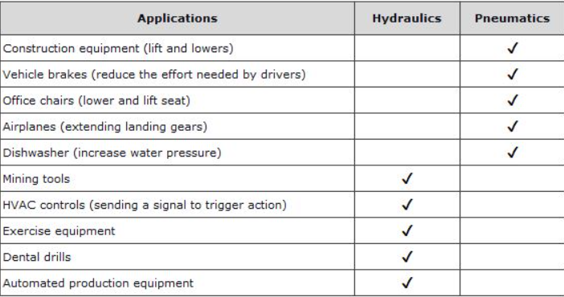

INTRODUCTION TO HYDRAULICS AND PNEUMATICS
Hydraulic Systems -
Hydraulics is a technology and applied science using engineering, chemistry, and other sciences involving the mechanical properties and use of liquids.
Hydraulics provides fluid power by means of pressurized liquids, such as oil or water.
Advantages -
- High force density
- Easy reversal of movement
- Good controllability
- Easy movement conversion
- Simple overload protection
- Design flexibility
- force transfer over long distance
- Long life cycle
- low maintenance
- Extensive standardization
- interchangeable
- Easily automated
Limitations -
- Temperature dependency
- Leakage problems
- Compressibility
- Manufacturing costs
Applications -
- Mobile Machines
- Ship building
- Metallurgical and Rolling Industry
- Plastic Machines
- Industrial Trucks
- Travel drives
- Flight Simulator

Hydraulic System Setup
Pneumatics Systems -
Pneumatics may be defined as the branch of engineering science which deals with the study of behavior and application of compressed air. Pneumatics can also be defined as the branch of fluid power technology that deals with the generation, transmission and control of power using pressurized air .
Advantages -
- Infinite availability of the source
- Safe and clean
- Less Operating and Maintenance cost
- The transfer of power and the speed is very easy to set up
- Can be stored and easily utilized
Limitations -
- Requires installation of air-producing equipment
- Can easily leak
- Potential noise
- Low operating pressure
- Compressibility of air causes problems in precision
Applications -
- These systems are used in manufacturing industries like machine tools, automotive, domestic appliances & commercial appliances.
- These systems are used in processing industries like food processing, chemical, textiles, paper, petrochemical, etc.
- These are used in railway coaches, automobile braking systems, wagons & printing presses.
- These are used in industrial robots for different purposes like packing, filling, drilling, stamping, punching, hosting, clamping, etc.

Pneumatic System Setup
Applications of Both
